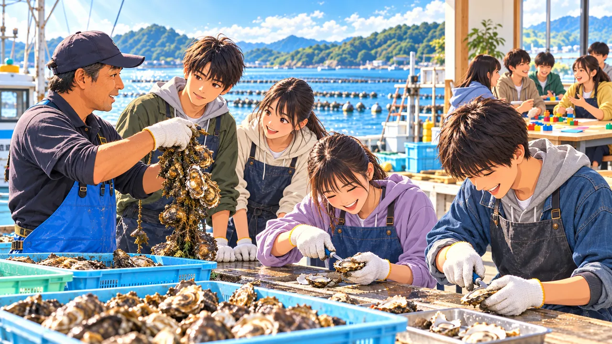
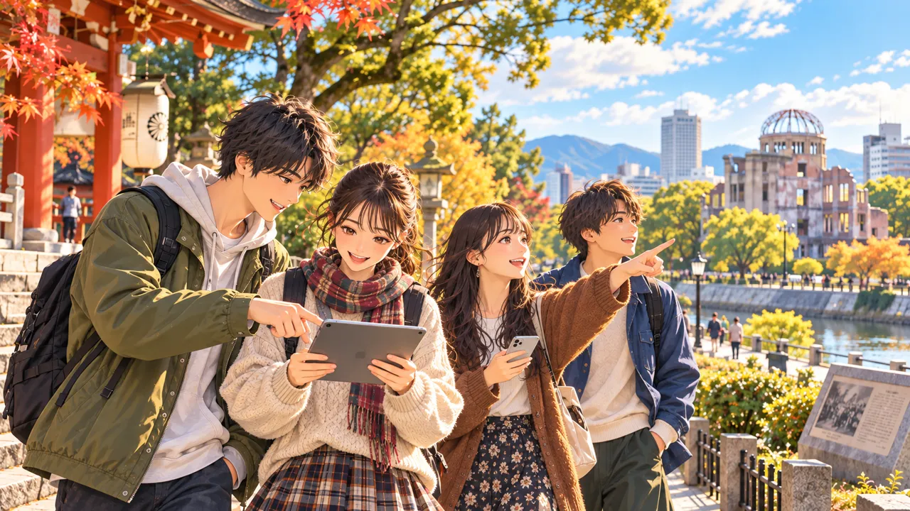
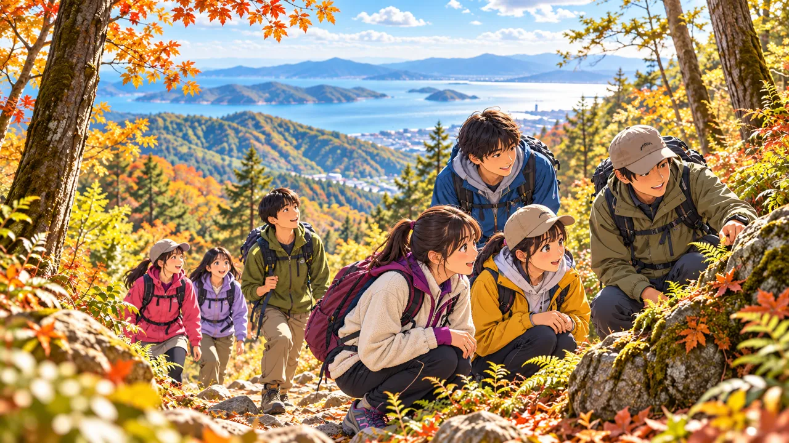
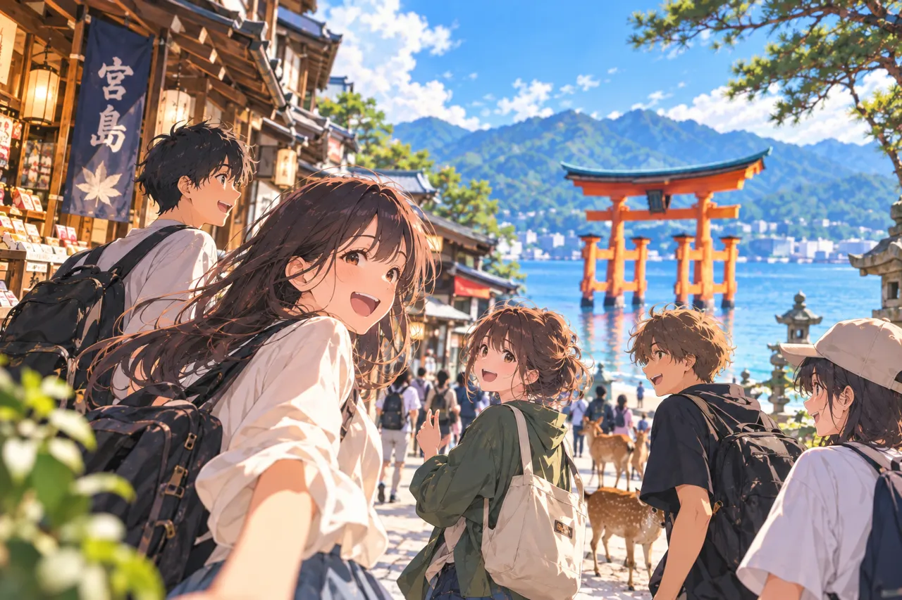
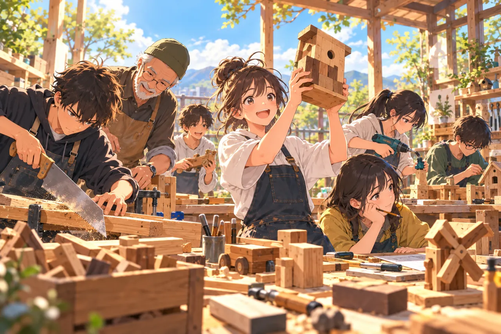
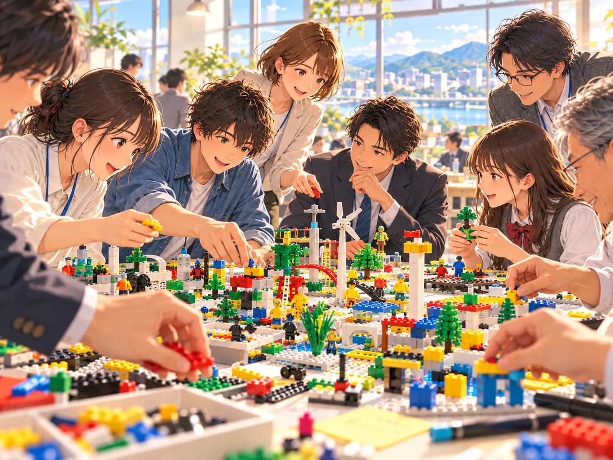
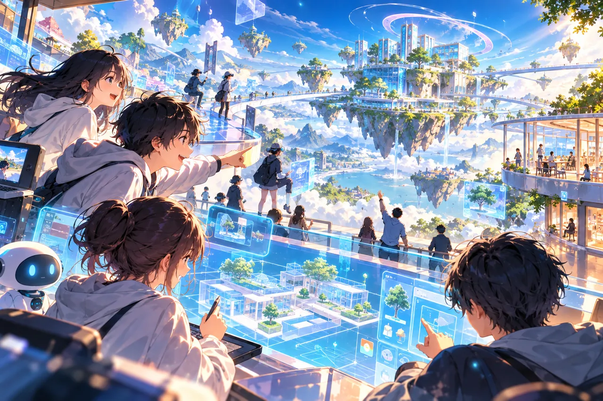
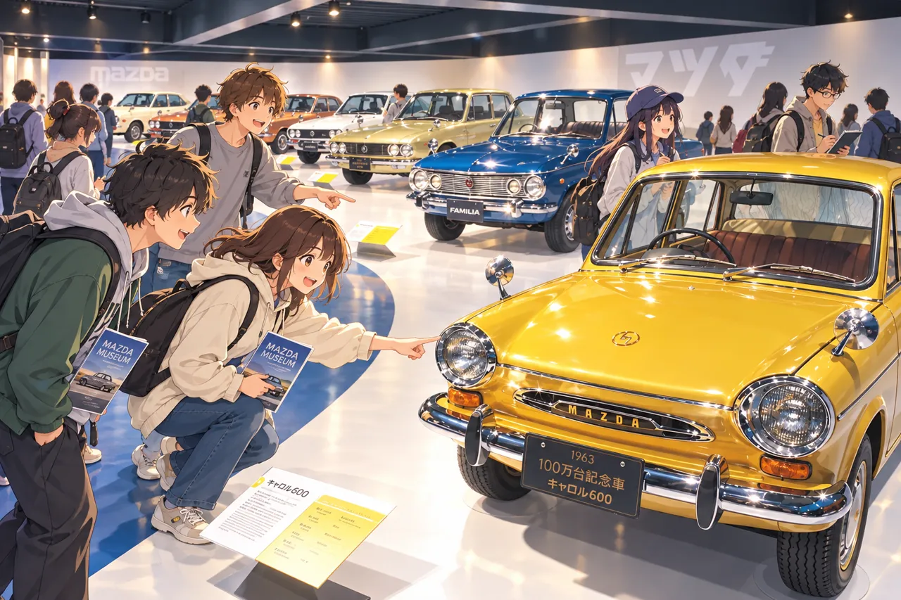
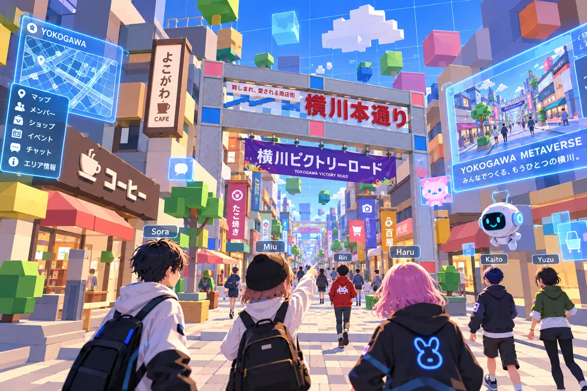

SB科全体
後期は、ここが変わる！
変更点 1
どの体験にも参加OK
ほかのプロジェクトの体験もOK
申込は3日前まで
変更点 2
「やってみたい」を試す
体験→実践
- 横川横川で試す
- ひろしま探究ツアーをつくる
- 安浦安浦で試す
- STEAM使ってもらう
やりたいことが分からなくてもOK。まずは体験から！
IMPORTANT
どの体験にも参加OK
ほかのプロジェクトの体験もOK
申込は3日前まで
「やってみたい」を試す
体験→実践
やりたいことが分からなくてもOK。まずは体験から！
PROJECTS
体験型の詳しい内容と申込は、上の「申込受付中のイベント」から。
日程が決まっていない予定
体験型の詳しい内容と申込は、上の「申込受付中のイベント」から。
体験型の詳しい内容と申込は、上の「申込受付中のイベント」から。
次の3つから選びます（あとで変更できます）
NEXT EVENTS

午前中は山根水産で牡蠣養殖業の課題を聞き取り、牡蠣剥きを体験します。午後は安浦キャンパスでLSP（レゴ・シリアスプレイ）を行います。
申込締切：2026年10月28日（水）
申込フォームを開く
横川最大のイベントを支える2日間。子ども向けワークショップの運営、またはホラーハウスのゾンビ役を選べます。
申込締切：2026年10月24日（土）
申込フォームを開く
国内最大級のSUPレースをサポート。エイドステーションで選手に飲料などを手渡し、励ましの声を掛けます。


登山ガイドとともに、呉の名峰・野呂山に登ります。途中までは舗装された道で、登山らしくなるのは後半の30分ほどです。
申込締切：2026年11月4日（水）
申込フォームを開く
原爆ドームから高速船で宮島へ渡り、ロープウェーで弥山の山頂へ向かいます。各自で昼食をとったあと、午後は宮島の価値を再発見するフィールドワークを行います。
申込締切：2026年11月6日（金）
申込フォームを開く
制作の過程で出る端材（ごみ）を使い、自由に木工作品をつくります。工房の機材を自由に使え、専門家の指導も受けられます。
申込締切：2026年11月7日（土）
申込フォームを開く
SB科が企画・運営するキッズスペースのお手伝い。LEGOやボードゲームの補助をしながら、来場した子どもたちと一緒に遊びます。
書籍の執筆など実績が豊富なWebデザイナー、久保田涼子さん（デジタルハリウッド広島校長）をお招きし、AI時代に求められるWebデザインの基礎を体験的に学びます。
申込締切：2026年11月17日（火）
申込フォームを開く
広島の企業・行政の人たちと、レゴを囲んで「第3のイノベーション」（今ある商品やサービスの周りに新しい仕掛けを加えて、価値を高めること）を一緒に考える2時間です。
申込締切：2026年11月22日（日）
申込フォームを開く
メタバースで遊び、制作ツールを使って自分たちの世界をつくります。全2回の体験です。

マツダミュージアムの見学ツアーに参加し、車づくりの歴史や意義、制作の過程を体験的に学びます。
申込締切：2026年12月3日（木）
申込フォームを開く
メタバースで街を再現したらどんなことができるか、地域の人や企業関係者を交えてアイデアを出し合います。
SCHEDULE